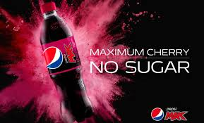

Pepsi Cherry
Bez problemu do kupienia w więkoszości polskich sklepów. Posiada lekko kwaśny wiśniowy smak.
Historia
~WikipediaPepsi Wild Cherry is a cherry-flavored cola first introduced in 1988 by PepsiCo as a replacement for Cherry Cola Slice, introduced as part of the line in 1986. A sugar-free version is also available, with zero calories, named Diet Pepsi Wild Cherry. Alongside the beverages, a Lip Balm version is also available. Pepsi Wild Cherry is currently sold in the United States and Canada as a regular, permanent product
Informacje
Skład
- woda gazowana
- błękit brylantowy FCF
- syrop glukozowo-fruktozowy
- kwas cytrynowy
- kwas fosforowy
- kwas askorbinowy
- czerwień Allura AC
- benzoesan potasu
- guma arabska
- EDTA
- kofeina
- cukier
Tabela wartości odżywczych w 330 ml
| Energia | Tłuscz | Węglowodany | Białko |
|---|---|---|---|
| 150 kcal | 0g | 0g | 0,01g |
Cena: 2,99 zł
Dostępność w polsce: Bardzo dobra